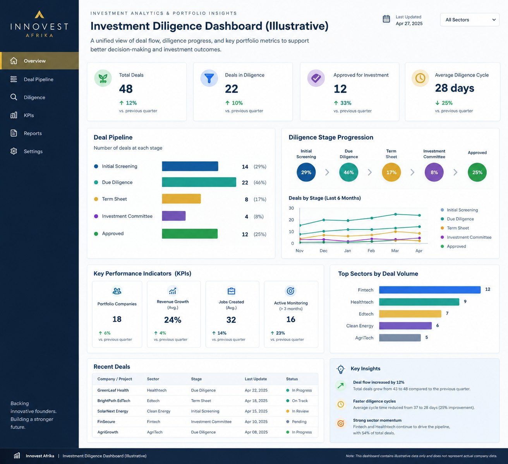
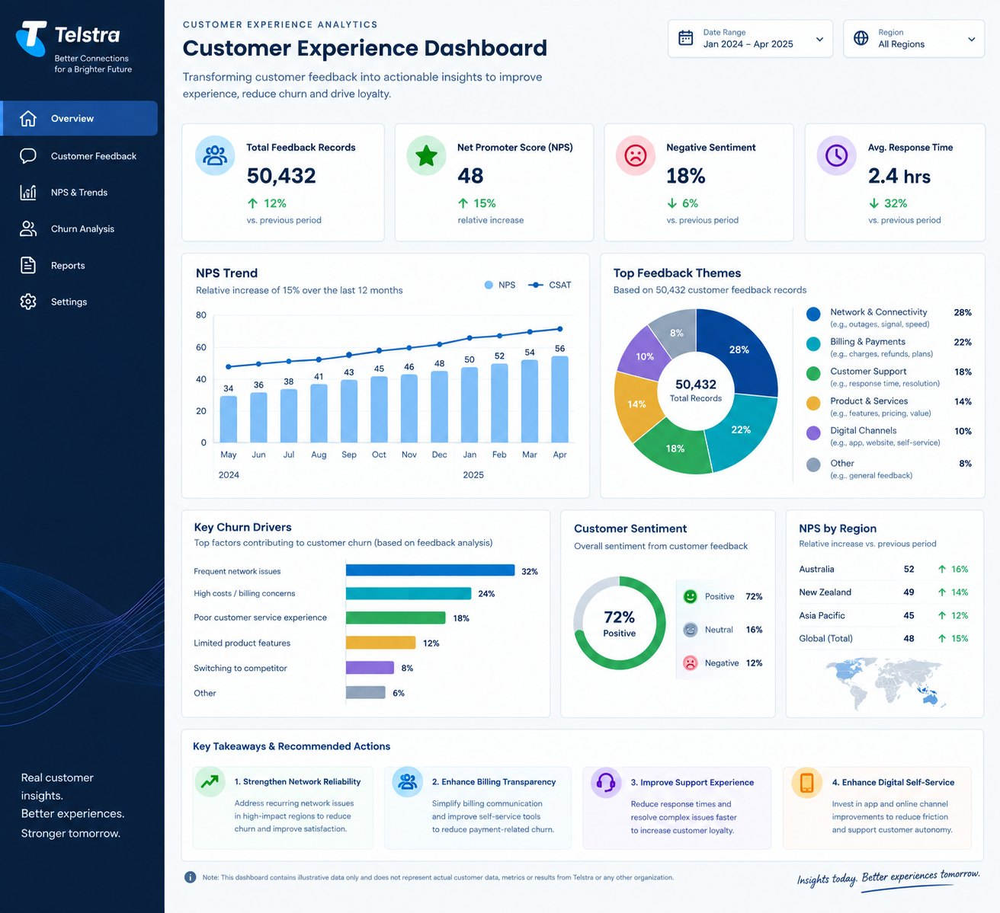

01 · EXPERIENCE
Make the complex feel clear.
Customer-facing leadership and technical support experience, with an emphasis on listening, thoughtful communication, service quality, and practical resolution.
I bring together customer experience, business analysis, and technology operations to turn complex challenges into clearer decisions, better systems, and measurable progress.
I’m Philip Ugbede Ododo. My work sits at the intersection of customer experience, business analysis, technology operations, and analytics. I combine hands-on service experience with structured problem-solving, and I’m building toward work that uses technology and applied AI thoughtfully to improve how organizations serve people.
Customer-facing leadership and technical support experience, with an emphasis on listening, thoughtful communication, service quality, and practical resolution.
Use reporting, dashboards, and structured analysis to make performance visible, improve data quality, and support decisions with evidence.
Bring process discipline, quality assurance, coaching, and cross-functional coordination to fast-paced teams and evolving business needs.
A career shaped by customer-facing technology, team leadership, and analytical work, bringing a practical operator’s perspective to business challenges.
Automated diligence dashboards, cleaned deal-flow data, and presented impact metrics to stakeholders. Used Excel, Power Query, Tableau, and Power Pivot to strengthen pipeline tracking and improve investment diligence visibility.
Selected outcome: Tableau dashboards improved diligence visibility by 30%.
Led cross-functional work on internal tools, analyzed more than 50,000 Medallia records to surface churn drivers, and supported systems adoption through process documentation, workshops, retrospectives, and staff training.
Selected outcomes: NPS increased by 15% (relative increase); 90% active adoption of new CRM modules within 30 days; 4.5/5 stakeholder satisfaction rating.
Diagnosed and resolved network incidents, documented incident patterns, coordinated with vendors and providers, and developed troubleshooting SOPs to reduce repeat errors and support service-level performance.
Selected outcome: Median incident turnaround of 1 hour 42 minutes with SLA compliance above 99%.
Progressed through three roles, Customer Support Representative, Technical Support Representative, and Team Manager, building from frontline customer assistance into technical troubleshooting and team leadership.
Career progression: Customer Support Representative → Technical Support Representative → Team Manager.
A snapshot of the types of problems I help solve. These portfolio snapshots are based on the experience and outcomes listed in my résumé; detailed case studies and supporting evidence can be shared where appropriate.
Used Excel and Power Query to clean deal-flow data, remove stale entries, and make pipeline tracking more reliable for investment stakeholders.
Built and maintained Tableau dashboards that made diligence activity easier to review and supported faster Investment Committee decisions.
Supported CRM adoption through more than 60 SOPs and user guides, training for 45+ staff, and monthly retrospectives to close feedback loops.


I’m interested in opportunities where customer insight, business analysis, technology operations, and emerging tools can improve products, processes, and business outcomes. My established experience is the foundation; applied AI and responsible technology are areas I’m actively exploring.
A combination of business analytics study and an undergraduate foundation in information technology.
Hult International Business School · Sep 2024 – Aug 2025
Infrastructure University Kuala Lumpur · Nov 2011 – Apr 2015
I’m open to conversations about customer experience, business analysis, analytics, technology operations, and long-term collaborations at the intersection of business and emerging technology.